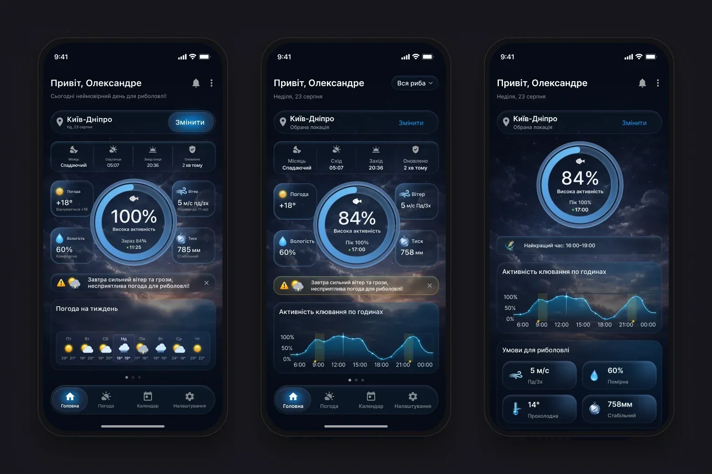
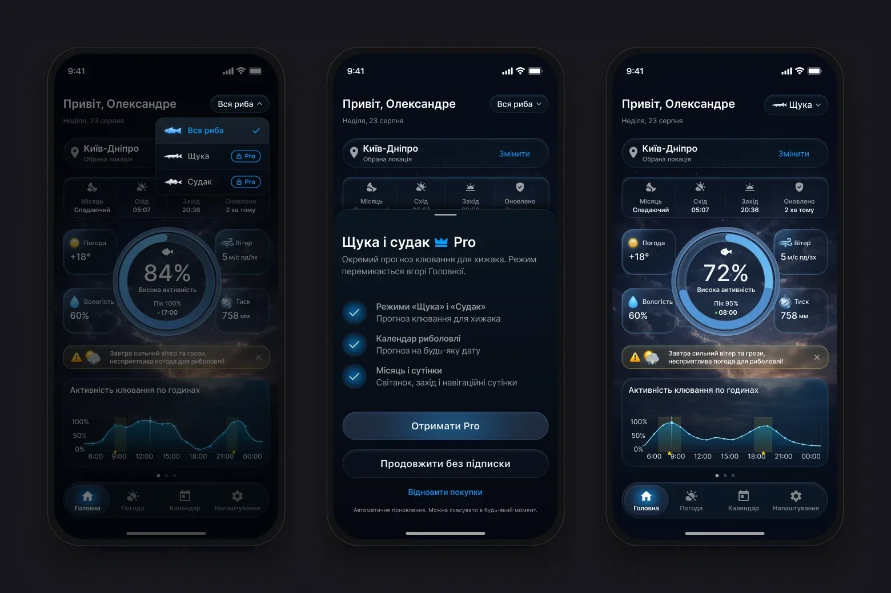
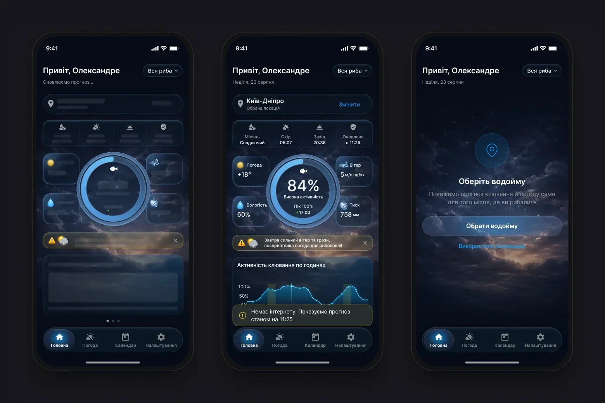
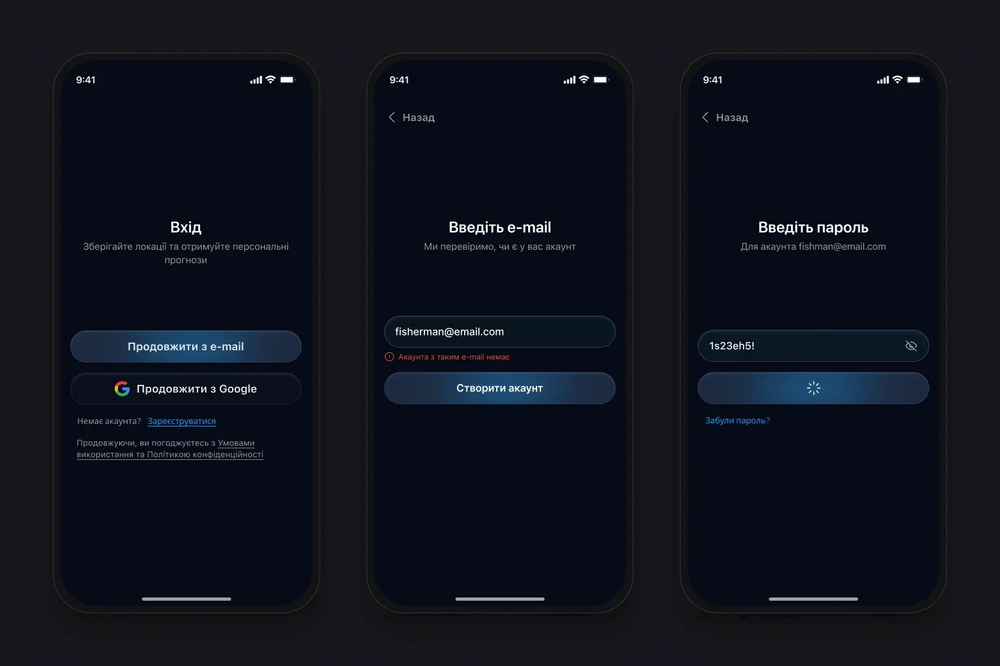
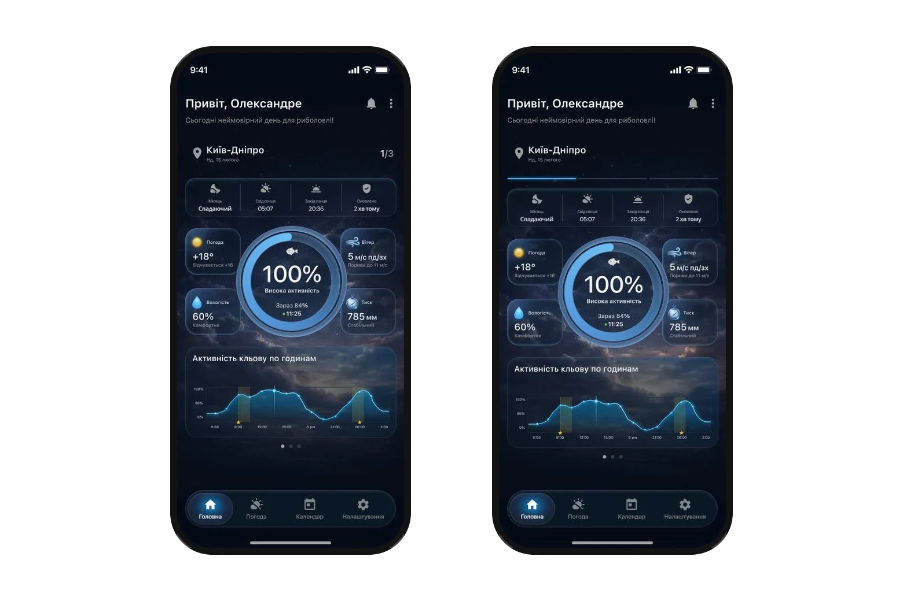
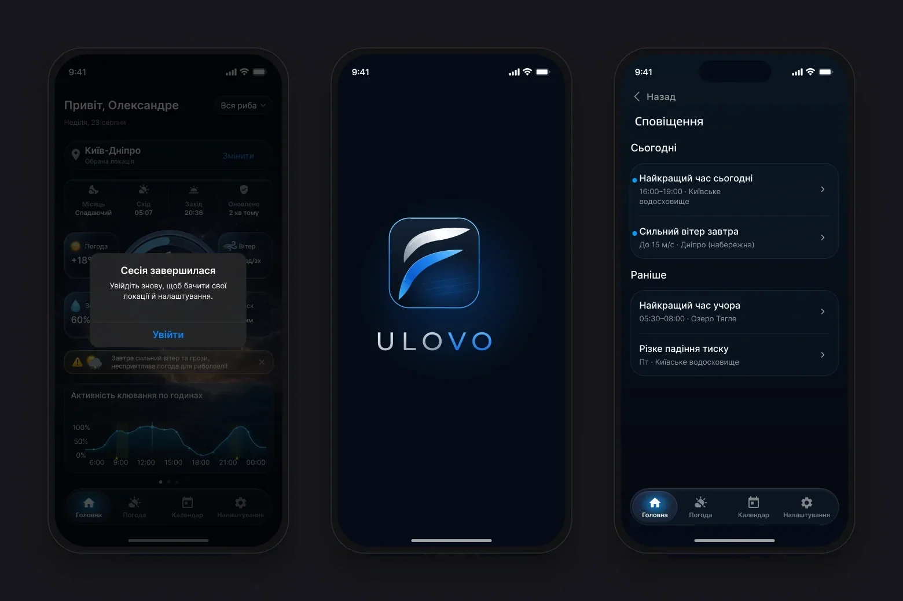

An angler needs one answer: is it worth going today, and when exactly.
The data for it is scattered – weather, wind, pressure, the Moon, twilight. The task: turn it into a forecast that reads in seconds and cover every state of a real app. There was no brief: I gathered requirements along the way with the client and the developer. There were no tests with people either, so decisions rest on scenarios, iOS constraints and the weather API.
The core is three forecast tabs: Home, Weather, Calendar. Around them – sign-in, the Pro subscription, profile and states that can appear on any screen.
The paywall opens from the fish filter on Home, from Calendar and from Settings
System states can appear on any screen: session expired, required update
12 flows · 86 screens and states. The number on each card is the count of screens and states in that flow.
Home: the answer first
- Why
- The first version contradicted itself: an “amazing day” above a storm warning, 100% and “Now 84%” on the ring, different pressure on two screens, 6–8 px labels.
- What I did
- Two versions. A – the same structure without contradictions and with text from 11 px. B – the decision first: activity → best time → hourly chart → conditions, without the carousel that hid the chart.
- Result
- Home answers “go or not, and when” before any scrolling.
StatusI handed both versions to the client, who likes the direction.

The fish filter changes the whole forecast
- Why
- Choosing a fish changes the bite calculation across the app, and “Pike” and “Zander” are Pro-only – that has to be visible before the tap.
- What I did
- The filter sits at the top of Home instead of a menu. “All fish” is free; paid modes carry a lock and a Pro badge. After purchase the mode turns on immediately; without it, “All fish” stays.
- Result
- The paywall appears at the moment of value, and each mode has its own chart and peak: pike in the morning and evening, zander at dusk.
StatusApproved direction, project in progress.

The forecast works by the water, offline
- Why
- The forecast is needed by the water, where there’s often no signal, and people may not allow geolocation.
- What I did
- Every main screen has loading, offline and error states. Offline shows the last forecast with its update time; without geolocation the spot is chosen by search.
- Result
- Instead of an empty screen by the water, people see the last forecast and know how fresh it is.
StatusStates exist on every main screen of the mockups.

Sign-in: e-mail first
- Why
- If there’s no account under the entered e-mail, a regular sign-in shows an error and sign-up starts from scratch.
- What I did
- E-mail first, then password. No account – the button becomes “Create account” and leads to sign-up with the address already filled in. “Cancel” in Google sign-in returns without an error.
- Result
- A person without an account reaches sign-up in one step, not through an error.
StatusIn the handoff mockups, project in progress.

Changing the water body
- Why
- In the build it wasn’t clear that you change the water body by tapping the block with its name. The earlier “Refresh” button was misleading: data refreshes on its own, yet the button opened location search.
- What I did
- I went through three options. “Change location” doesn’t fit on one line on small screens with a long water-body name, and an icon would have to be very obvious. I kept a short “Change” next to the name. I removed “Apply” and “Cancel” from the picker – a tap applies the choice.
- Result
- Changing the water body is visible right away and no longer gets confused with refreshing data.
StatusThe client chose “Change”; the button is on every screen with a location.
Swiping between days
- Why
- The developer suggested switching days with a swipe on Home instead of going to the calendar. But a swipe on its own is invisible: added as is, people won’t guess it exists.
- What I did
- Two hint options. A – a “1/3” counter next to the location and dots at the bottom. B – a day indicator at the top under the location, like in stories: you see how many days are available and which one you’re on. Past days don’t swipe; 3 days without a subscription, a week with Pro.
- Result
- The swipe now has a visible hint: the indicator shows there are several days and where you are among them.
StatusThe client chose B, which I recommended too.

States and system
Settings apply immediately, an expired session returns to sign-in with the e-mail filled in, and a push opens the right screen. UI kit: 4 variable collections, 14 text styles on SF Pro, light theme as a mode switch. Weather backgrounds are tied to OpenWeather codes, so developers don’t have to invent the mapping. For the iOS “Reduce Transparency” setting every glass surface has an opaque fallback colour: a semi-transparent option was dropped because the system can ignore transparency too.

- 01
The hardest part was the hierarchy of indicators: a short overview on Home, a detailed forecast on “Weather”, linked by the chosen spot and day.
- 02
The data shaped much of the interface: the hourly forecast comes in three-hour steps and only five days ahead, the API doesn’t return water temperature – so it was removed, and only the weather icon fits into a calendar cell.
- 03
Next: test with anglers whether the overview is enough to decide when to go, and whether the bite activity reading is clear.